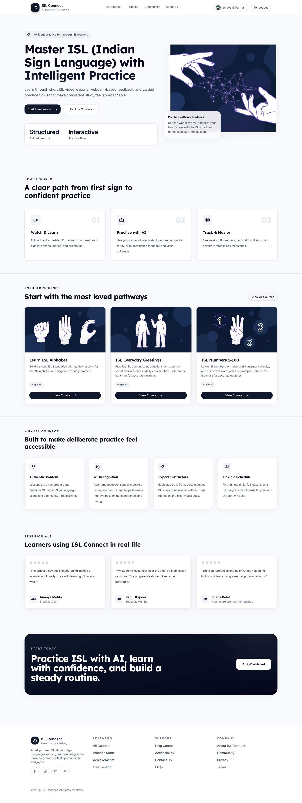
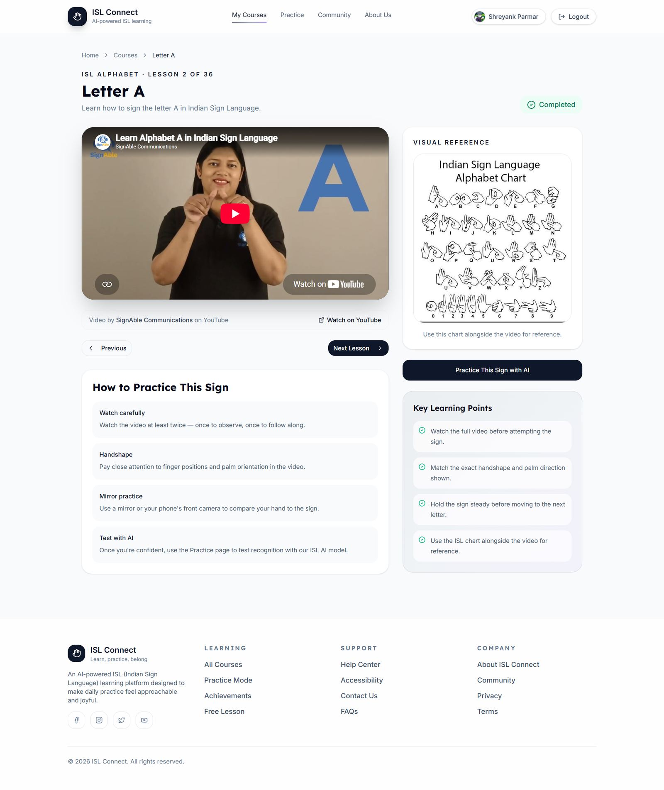
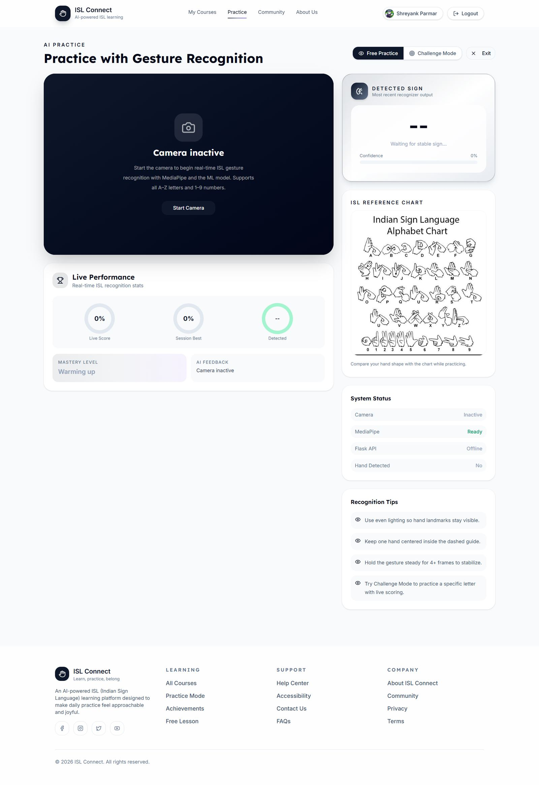
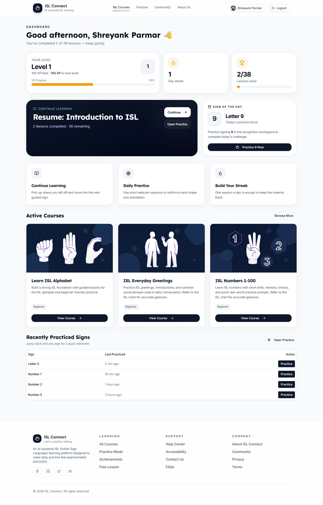
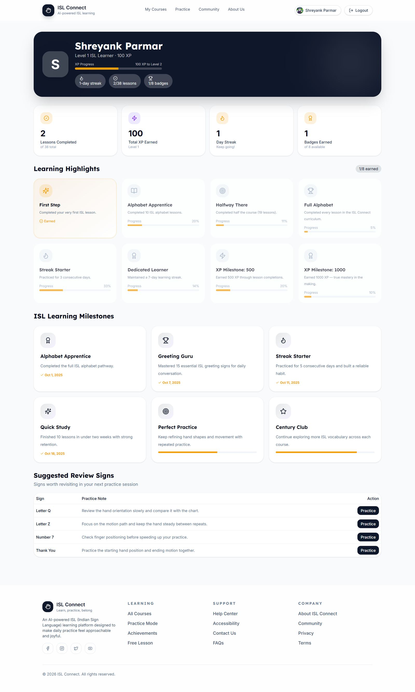
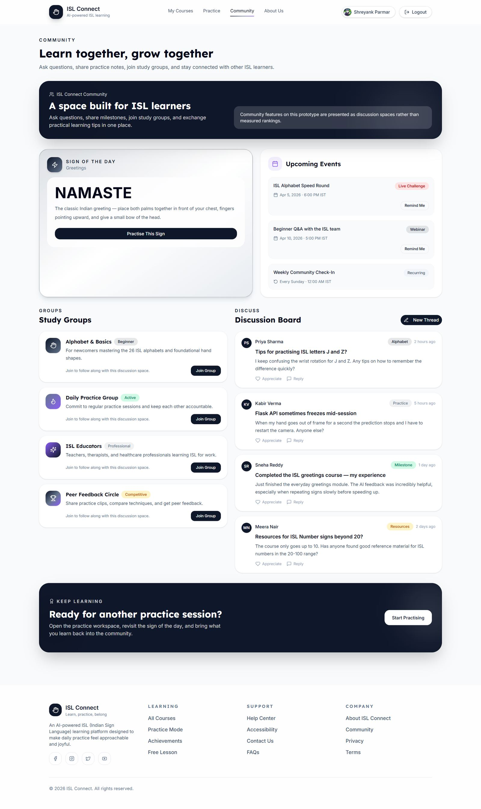
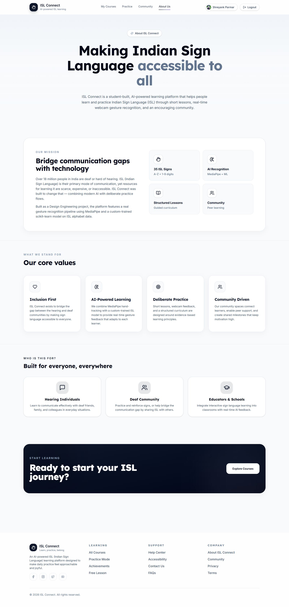
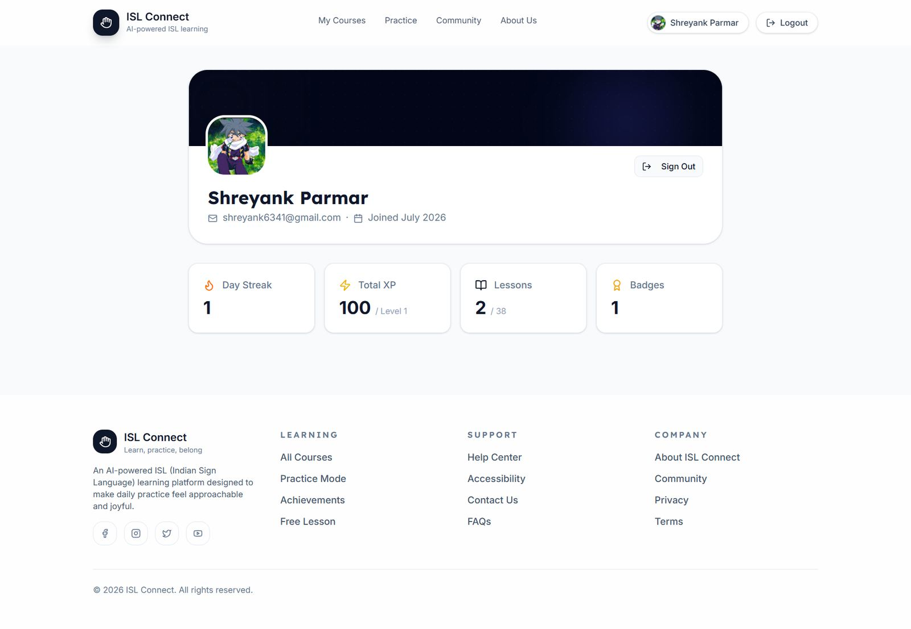

A learning platform that teaches Indian Sign Language through short lessons and live, webcam-based gesture recognition — built to make daily practice feel approachable instead of intimidating.
Over 18 million people in India are deaf or hard of hearing, and Indian Sign Language is often their primary mode of communication — yet structured, accessible ways to learn it are scarce. Most resources are either expensive, scattered across YouTube with no practice loop, or too clinical to stick with. We wanted something that felt more like a habit you could actually keep.
The homepage leads with what makes the product different — AI-based practice feedback, not just video lessons — and lays out the three-step path (watch, practice with AI, track progress) before asking for any commitment.

Each lesson pairs a short reference video with the full ISL alphabet chart for cross-checking, plus a direct path into AI-assisted practice once you're ready to test yourself.

This is the core of the product: a webcam feed runs through MediaPipe for hand landmark tracking, feeding a custom-trained scikit-learn model that recognizes ISL letters and numbers in real time — with live confidence scoring and feedback so you know whether you're actually forming the sign correctly, not just guessing.

Practice only works if people come back. The dashboard leans on small, concrete signals — a day streak, XP progress, a "sign of the day" — to make returning feel worthwhile rather than like homework.


Language learning is easier with other people. The community space holds study groups by skill level and interest — including one for educators and healthcare workers learning ISL for professional use — plus an open discussion board for troubleshooting and sharing progress.

The About page states the mission plainly, and the profile page keeps personal progress visible without turning the whole experience into a leaderboard.


Expanding the gesture model beyond the alphabet and 1–9 into common everyday phrases, tightening the confidence-scoring feedback so it's specific about what to adjust (not just right/wrong), and running a small usability session with actual ISL learners to see where the current flow breaks down.